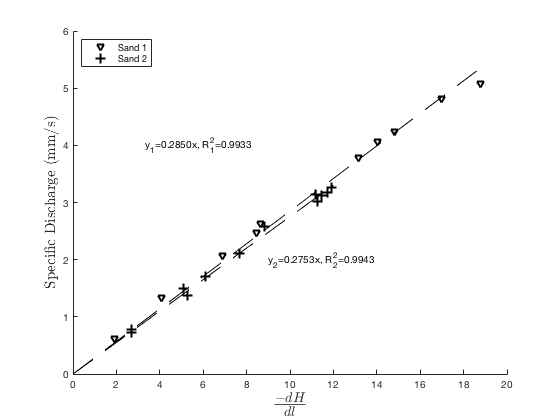
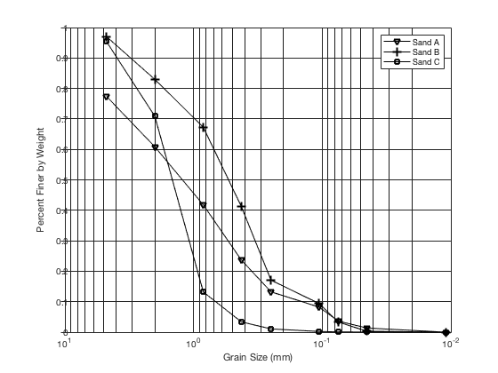

Contents
% HW2 ECI 144 Due Jan 30th, 2019
Problem 2
clc, clear SandNum=12; % Sand 1 q1 = [0.624,1.33,2.08,2.47,2.63,3.78,4.06,4.24,4.82,5.09]; % Specific Discharge (mm/s) H1i= [1.11,2.36,4,4.9,5.01,7.63,8.13,8.58,9.86,10.89]; % Inlet Head (m) H1o = zeros(1,length(H1i)); % Outlet Head (m) delta_h1_dl=-1*(H1o-H1i)./0.58; tbl1 = table(delta_h1_dl',q1','VariableNames',{'minus_gradient','q'}); lm1 = fitlm(tbl1,'linear','Intercept',false); x=[0:0.1:19]; fit=lm1.Coefficients{1,1}.*x; % Sand 2 q2 = [3.26,3.17,3.12,3.01,3.14,2.58,2.1,1.7,1.37,1.5,0.78,0.719]; % Specific Discharge (mm/s) H2i = [9.48,12.88,9.8,12.87,12.8,8.86,12.84,6.71,12.81,5.58,2.98,12.86]; % Inlet Head (m) H2o = [-3.6,0,-2.78,0.46,0.49,-0.83,4.4,0,7.03,0,0,9.88]; % Outlet Head (m) delta_h2_dl=-1*(H2o-H2i)./1.1; tbl2 = table(delta_h2_dl',q2','VariableNames',{'minus_gradient','q'}); lm2 = fitlm(tbl2,'linear','Intercept',false); x2=[0:0.1:12]; fit2=lm2.Coefficients{1,1}.*x2; hold on plot(delta_h1_dl,q1, 'kv') plot(delta_h2_dl,q2, 'k+') plot(x2,fit2,'k--') plot(x,fit,'k--') text(3.3,4,'y_1=0.2850x, R_1^2=0.9933') text(9,2,'y_2=0.2753x, R_2^2=0.9943') legend('Sand 2','Linear Model', 'location','NW') legend('Sand 1','Sand 2') xlabel('$\frac{-dH}{dl}$', 'Interpreter','latex','FontSize',20) ylabel('Specific Discharge (mm/s)', 'Interpreter','latex','FontSize',15) ax = gca; % c = ax.Color; % ax.Color = 'blue'; % % ax.FontSize = 14

Problem 4
clear,clc data=[4.3e-4, 6.1e-3, 2.5e-5, 1.2e-4, 1.0e-6, 7.1e-3, 9.1e-6, 2.2e-3, 4.2e-5,8.7e-4, 3.5e-5]; mean(data) geomean(data) harmmean(data)
ans =
0.0015
ans =
1.5702e-04
ans =
9.0547e-06
Problem 6
clear,clc ss = [4.75, 2, 0.84, 0.425, 0.25, 0.106, 0.0750, 0.045, 0.011]; % in mm mass_retained_sample_A = [49.9, 36.5, 42.1, 40, 23, 11, 10.2, 5, 3]; % g mrsA=mass_retained_sample_A; mass_retained_sample_B = [9.9, 46.5, 52.1, 86.2, 80, 25.3, 20.2, 10, 1]; % g mrsB=mass_retained_sample_B; mass_retained_sample_C = [16.6, 88, 207, 35.2, 8.3, 3, 0.5, 0.2, 0.1]; % g mrsC=mass_retained_sample_C; for k=2:length(mass_retained_sample_A) mrsA(k)=mrsA(k-1)+mass_retained_sample_A(k); mrsB(k)=mrsB(k-1)+mass_retained_sample_B(k); mrsC(k)=mrsC(k-1)+mass_retained_sample_C(k); end percent_finerA = 1 - mrsA/sum(mass_retained_sample_A); percent_finerB = 1 - mrsB/sum(mass_retained_sample_B) percent_finerC = 1 - mrsC/sum(mass_retained_sample_C); %cA=polyfit(fliplr(ss), fliplr(percent_finerA),2); %x=[0:.01:5]; %funA=cA(1).*x.^3+cA(2).*x.^2+cA(3).*x+cA(4); %funA=cA(1).*x.^2+cA(2).*x.^1+cA(3); clf hold on semilogx(fliplr(ss),fliplr(percent_finerA),'kv-') semilogx(fliplr(ss),fliplr(percent_finerB),'k+-') semilogx(fliplr(ss),fliplr(percent_finerC),'ks-') %semilogx(x,funA,'k-') set(gca, 'XDir','reverse','GridAlpha',1,'MinorGridAlpha',1) set(gca,'minorgridlinestyle','-') set(gca, 'XScale', 'log'); grid on xlabel('Grain Size (mm)') ylabel('Percent Finer by Weight') legend('Sand A','Sand B','Sand C')
percent_finerB =
Columns 1 through 7
0.9701 0.8297 0.6724 0.4121 0.1706 0.0942 0.0332
Columns 8 through 9
0.0030 0
